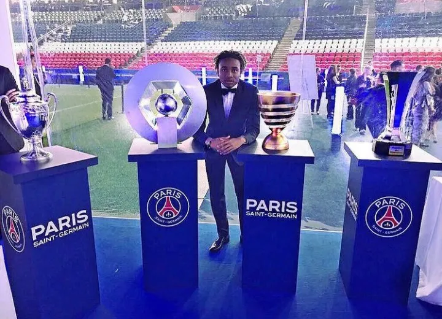
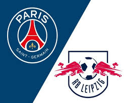
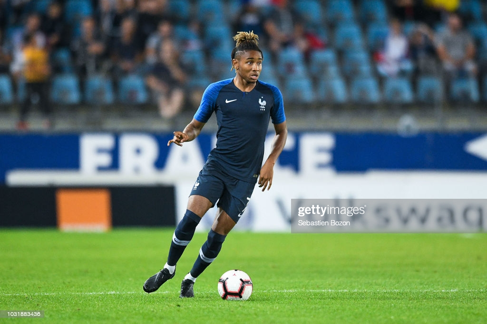

Prijzen

Cristopher Nkunku is zoals ik al heb gezegd nog een jonge speler die niet heel bekend is. daardoor heeft hij nog niet veel prijzen gewonnen. in een interview heeft hij ooit gezegd dat hij nog veel prijzen wil winnen in de toekomst, zowel voor de clubs waar hij voor gaat spelen als de individuele trofeeën. hij wil natuurlijk ook veel winnen voor de Franse elftal. ik ga nu een paar prijzen opnoemen die Cristopher Nkunku heeft gewonnen. Kampioen Ligue 1, 3x 2015/16, 2017/18, 2018/19
Coupe de France, 2x 2016/17, 2017/18
Coupe de la Ligue, 2x 2016/17, 2017/18 en
Trophée des Champions, 2x
Dit zijn een paar prijzen die hij heeft gewonnen. hij heeft ook nog heel veel prijzen gewonnen in zijn jeugd, omdat hij een hele goeie talent was. de prijzen die hij in zijn jeugd heeft gewonnen zijn niet bekend.
Clubs

Nkunku begon zijn carrière bij Paris Saint Germain. daar moest hij zich bewijzen in de jeugd om in het eerste elftal te komen. Paris Saint Germain heeft namelijk heel veel goede spelers en je moet echt een van de beste zijn om in het eerste elftal te komen. Nkunku was een van de beste en hij werd doorgeschoven naar het eerste elftal. maar hij begon wel altijd op de bank en moest zich bewijzen op het veld als hij erin werd gewisseld. Na een leuke tijd bij Paris Saint Germain besloot hij om in 2019 naar de Duitse club RB Leipzig te gaan. Hij had die besluit genomen omdat hij bij RB Leipzig wel hele wedstrijden kon spelen waardoor hij zich ook echt kon bewijzen aan de wereld. Nu speelt hij nog steeds bij RB Leipzig en hij speelt de sterren van de hemel. hij scoort elke wedstrijd minimaal 1 keer en hij zorgt er steed maar weer voor dat zijn club wint. ik voel dat hij dit jaar een transfer ga maken naar een grotere club omdat hij het op dit moment zo goed doet.
Internationaal

Nkunku is een jonge Fransman die in frankrijk is geboren en hij vond toen hij 4 jaar was voetbal al heel leuk. zijn droom was altijd al om profvoetballer te worden. hij bleef spelen tot hij in het Franse jeugd terecht kwam. toen besefte hij dat hij een groter kans had om profvoetballer te worden. Nkunku was een talent en veel mensen keken naar hem op. hij kwam later in de onder 23 terecht. daar speelde hij hoe hij altijd speelde. maar hoe goed hij ook speelde, hij heeft nooit de kans gehad om in het eerste team van Frankrijk te spelen. Op dit moment verwacht iedereen dat hij zijn debuut gaar maken in het Franse elftal, maar de trainer van Frankrijk weigert het op een of andere manier. ik hoop dat hij in de toekomst zich kan laten zien in het Franse Elftal.